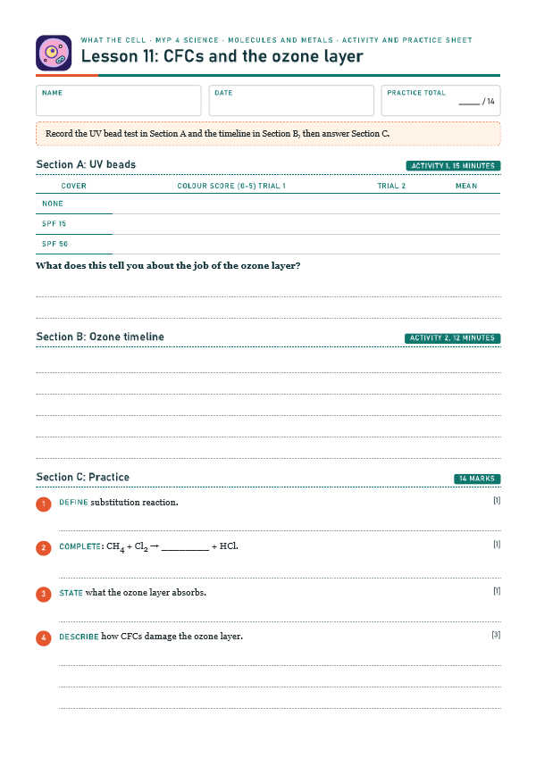

By the end of the lesson you can
- Describe the substitution reaction of an alkane with chlorine
- Explain why the ozone layer matters
- Describe how CFCs damage the ozone layer
- Evaluate the Montreal Protocol as a global solution
Keys: arrows or a presentation clicker move the slides, F for full screen. Slides with a red dot have a video or simulation.
Videos (all 5 minutes or less)
- 4:26
The ozone layer, part 1
FuseSchool. While you watch: Where is the ozone layer? Slide 9.
Simulations
- Lab
Print and practise

Activity and practice sheet
Used in the lesson’s activities, with practice questions. Your teacher has the answers.
Download (PDF)Lesson 11 slides
All 16 slides in one file, to read again or print. The video buttons on the slides open YouTube.
Download the slides (PDF)Revising? The Revision tab on the unit page has the unit notes and review.
Class activity pack
Everything to print for the lesson’s activities: picture cards, sorting mats, station cards with their kit lists, and the teacher’s set-up notes. Print it before class.
Download the activity pack (PDF)Notes: CFCs and the ozone layer
substitution
One atom in a molecule is replaced by another. For example: H replaced by Cl.
halogen
Group 7 element: fluorine, chlorine, bromine. For example: chlorine.
CFC
Chlorofluorocarbon: carbon, chlorine and fluorine. For example: old fridges and sprays.
ozone
O3; a layer high in the air that absorbs UV. For example: the ozone layer.
ultraviolet (UV)
Invisible light that can burn skin and damage DNA. For example: sunburn.
Montreal Protocol
The 1987 agreement to phase out CFCs. For example: signed by every country.
Key words
| substitution | one atom replaced by another |
|---|---|
| CFC | chlorofluorocarbon |
| ozone layer | absorbs UV high in the air |
| UV | harmful invisible light |
| Montreal Protocol | 1987 agreement to ban CFCs |